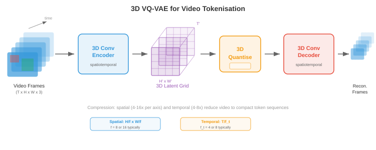
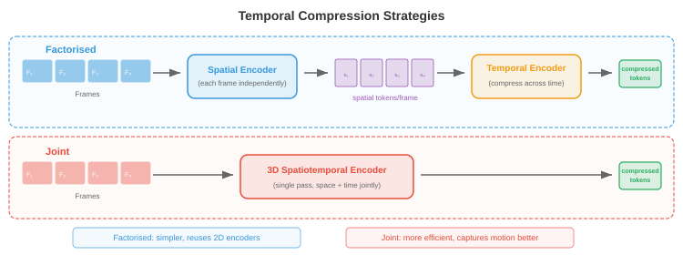

图像与视频 Token 化¶
一句话总结：图像与视频 Token 化把连续视觉数据转成 Transformer 能像文本一样处理的离散 Token 序列，核心方法从 VQ-VAE、VQ-GAN 一路发展到残差量化与无查表量化。
图像与视频 Token 化把连续视觉数据转换成离散 Token 序列，让 Transformer 能像处理文本一样处理它们。 本节涵盖 VQ-VAE、VQ-GAN、码本学习、DALL-E 的 dVAE、视频 Token 化，以及无查表量化.
为什么要给图像做 Token 化¶
-
把语言想成一个有限的字母表：英语大约 26 个字母，现代语言模型把文本切成 30,000 到 100,000 个子词 Token. 每一句话都变成一串离散符号，Transformer 就能一个一个地预测。 图像则不一样，它活在一个连续的高维空间里：一张 256x256 的 RGB 图像是 \(\mathbb{R}^{256 \times 256 \times 3} \approx \mathbb{R}^{196{,}608}\) 中的一个点。 如果你想让语言模型用它讲英语的那套机器去 "讲" 图像，就得把这些连续像素阵列转成一个可控长度的离散 Token 序列，且这些 Token 来自一个有限词表。 这个转换过程就是 图像 Token 化.
-
想象你是一位马赛克艺术家。 你手上没有无穷种色调的瓷砖，只有一套固定调色板，比方说 8192 种不同颜色的瓷砖。 要把一张照片复现成马赛克，你必须 (1) 决定每块瓷砖对应照片的哪个区域，(2) 为每个区域挑最接近的瓷砖颜色，(3) 接受细节会丢一些，但整体画面还认得出来。 图像 Token 化做的正是这件事：编码器把空间图块 (patch) 压成潜向量，码本 (codebook) 把每个向量映射到最近的一项，结果就是一个整数索引组成的网格，每个图块一个索引，后续的离散模型就能处理它。
-
Token 化的收益有三。 第一，大幅压缩图像：一张 256x256 的图可能变成 16x16 的 Token 网格，序列长度从 65,536 个像素降到 256 个 Token，这样基于注意力的模型才吃得下 —— 毕竟它的开销随序列长度平方增长。 第二，统一表示：文本 Token 和图像 Token 活在同一个离散词表里，让单个自回归 Transformer 就能生成文本与图像交错的内容。 第三，加了一个有用的瓶颈，迫使模型学习语义有意义的编码，而不是把像素噪声硬背下来。

- 回想一下第 8 章讲过的卷积神经网络 (Convolutional Neural Network, CNN) 如何从图像中抽出层级化的特征图，以及第 7 章讲过的文本分词器怎么把字符串转成整数序列。 图像 Token 化正好卡在这两者的交界：它用一个 CNN 或视觉 Transformer 编码器 (第 8 章) 提取空间特征，再借离散词表的思路 (第 7 章) 把这些特征转成 Token 索引。
VQ-VAE：向量量化¶
-
第 6 章讲过，标准的 变分自编码器 (Variational Autoencoder, VAE) 把输入编码为一个连续的潜分布，然后把从该分布采样得到的样本解码回重建结果。 潜空间是连续的，直接喂给离散序列模型很不顺手。 向量量化变分自编码器 (Vector Quantised Variational Autoencoder, VQ-VAE) 由 van den Oord 等人在 2017 年提出，用一个可学习的嵌入向量码本，把每个编码器输出 "吸附" 到码本里最近的一项，从而用离散潜取代连续潜。
-
想象一座刚好有 \(K\) 层带编号的书架的图书馆。 一本新书 (编码器输出) 来了，图书管理员会把它放到那层它最像的旧书 (码本向量) 所在的架子上，并记录架子编号。 之后要取书，只需要架子编号：那层码本向量就是不错的替代。 这就是向量量化。
-
正式地讲，VQ-VAE 有三个组成部分:
-
编码器 \(E\)：把输入图像 \(\mathbf{x} \in \mathbb{R}^{H \times W \times 3}\) 映射到一个连续潜向量的空间网格 \(\mathbf{z}_e = E(\mathbf{x}) \in \mathbb{R}^{h \times w \times d}\)，其中 \(h \times w\) 是下采样后的空间分辨率，\(d\) 是嵌入维度。
-
码本 \(\mathcal{C} = \{\mathbf{e}_1, \mathbf{e}_2, \ldots, \mathbf{e}_K\} \subset \mathbb{R}^d\)：包含 \(K\) 个可学习的嵌入向量。 典型码本大小从 512 到 16,384 项。
-
解码器 \(D\)：从量化后的潜表示重建图像。
-
量化步骤 用最近码本项替换编码器在空间位置 \((i, j)\) 的输出 \(\mathbf{z}_e(\mathbf{x})\):
- 这就是嵌入空间里的最近邻查找，和 k-means 分配 (第 6 章) 是同一个操作。 索引 \(k^\ast\) 就是空间位置 \((i,j)\) 的离散 Token，整张图被表示为一个 \(h \times w\) 的整数网格，每个整数取自 \(\{1, \ldots, K\}\).

- 麻烦在于 \(\arg\min\) 不可微：离散选择挡住了反向传播。 VQ-VAE 用 直通估计器 (straight-through estimator) 解决这个问题：前向传播时，解码器收到的是 \(\mathbf{z}_q\) (量化后的向量)；反向传播时，重建损失对 \(\mathbf{z}_q\) 的梯度被直接复制给 \(\mathbf{z}_e\)，就好像量化步骤是恒等函数一样。 紧凑地写出来是:
-
其中 \(\text{sg}(\cdot)\) 是停止梯度算子。 前向时它的值就是 \(\mathbf{z}_q\)；反向时，梯度只从 \(\mathbf{z}_e\) 这项流过去。
-
完整的 VQ-VAE 损失有三项:
-
重建损失 训练编码器和解码器忠实地还原输入。 码本损失 (也叫 VQ 损失) 把码本向量往编码器输出方向拉；注意 \(\text{sg}(\mathbf{z}_e)\) 意思是编码器不从这一项拿梯度，所以它只更新码本。 承诺损失 (commitment loss) 做反方向的事：鼓励编码器输出贴近码本向量，防止编码器 "跑离" 码本。 超参 \(\beta\) (通常 0.25) 用来调节码本项与承诺项的平衡。
-
实践中，码本通常用 指数移动平均 (exponential moving average, EMA) 而不是梯度下降来更新，这样更稳。 设 \(\mathbf{n}_k\) 是分配给码本项 \(k\) 的编码器输出的计数，\(\mathbf{s}_k\) 是它们的求和。 EMA 更新是:
- 其中 \(\gamma\) 是衰减率 (通常 0.99). 这等价于在编码器输出上跑一个在线 k-means 算法。
码本坍缩¶
-
VQ-VAE 有一个臭名昭著的失败模式叫 码本坍缩 (codebook collapse) (也叫索引坍缩)：模型学会只使用 \(K\) 个码本项中一小部分，剩下的绝大多数项都 "死掉" 了。 想象一座图书馆，90% 的书架都是空的，因为管理员总把书塞给固定几个热门书架。 这浪费了表示能力。
-
码本坍缩之所以发生，是因为编码器、码本、解码器在训练中共同适应。 如果某一项连续好几个批次都没被选中，它就漂离编码器流形，更不可能被选中，形成正反馈循环。
-
有几种技术可以缓解码本坍缩:
- 码本重置：定期从随机采样的编码器输出复制值，重新初始化死掉的项。 让死项在潜空间的活跃区域重新起步。
- 带 Laplace 平滑的 EMA 更新：在 \(\mathbf{n}_k\) 上加一个小常数，防止任何一项计数为零，确保所有项都能拿到梯度信号。
- 调节承诺损失：增大 \(\beta\) 会迫使编码器输出更紧密地围绕码本项聚集，让分配分布更均匀。
- 因子化编码：把码本查找拆成多个小查找的乘积 (比如两个各 \(\sqrt{K}\) 大小的码本)，通过降低每次查找的有效码本大小来提升利用率。
- 熵正则化：加一个惩罚项，鼓励码本使用分布均匀，即最大化熵 \(H = -\sum_k p_k \log p_k\)，其中 \(p_k\) 是经验分配概率。

VQ-GAN：用对抗训练换来更高保真度¶
-
VQ-VAE 的重建还算不错，但像素级的 \(\ell_2\) 损失倾向于生成模糊的输出，原因是它一视同仁地惩罚每个像素偏差，会在所有合理的细节上取平均，而不是选一个清晰的。 想象让人画一张脸，目标是使它与所有可能的脸的平均差异最小 —— 他画出的会是一张模糊的平均脸，而不是清晰的具体脸。
-
VQ-GAN (Esser 等，2021) 通过把 VQ-VAE 框架和 判别器 (来自生成对抗网络，第 6 章) 结合起来解决这个问题。 判别器是一个基于图块的卷积网络，用来判断一个局部图像图块是真实的 (来自训练数据) 还是伪造的 (来自解码器). 这种对抗损失鼓励解码器产生感知上锐利、真实的纹理，而不是像素级的平均。
-
VQ-GAN 目标在 VQ-VAE 损失上加了两项:
- 对抗损失 \(\mathcal{L}_\text{adv}\) 是作用于解码器输出的标准生成对抗网络 (Generative Adversarial Network, GAN) 目标。 判别器 \(\mathcal{D}\) 试图区分真实图块和解码图块，而解码器 (生成器) 试图骗过它。 非饱和形式写作:
- 感知损失 (perceptual loss) \(\mathcal{L}_\text{perc}\) 比较原图和重建图在一个预训练网络 (通常是 VGG 或 LPIPS) 中激活的特征:
-
其中 \(\phi_l\) 表示预训练网络第 \(l\) 层的特征图。 这个损失捕捉的是高层结构相似性，而不是像素级精度。
-
权重 \(\lambda_\text{adv}\) 会自适应设置，使对抗梯度和重建梯度大致平衡，防止训练早期重建质量还差时对抗损失就占了主导。

- 结果是在同样码本大小下，相较 VQ-VAE 得到显著更锐利的重建。 VQ-GAN 是许多主流图像生成系统背后的骨干 Token 化器，包括最初的 DALL-E、Parti，以及众多文生图模型。 它把一张 256x256 图像变成 16x16 或 32x32 的离散 Token 网格 (码本大小 1024 到 16384)，每个空间维度上做到 16 到 64 倍的压缩比。
残差量化与多尺度码本¶
-
单一码本给重建质量设了一个硬上限：每个空间位置就用一个码本向量表示，任何比码本能表达更精细的细节都会丢。 想象用一个固定调色板里的单个词描述一种颜色："青绿色" 很接近但不精确。 如果你能加一个修饰 —— "青绿色，但蓝一点、亮一点" —— 就会更贴近。
-
残差量化 (residual quantisation, RQ) 把这个思路做成迭代。 第一次量化产生 \(\mathbf{z}_q^{(1)}\) 之后，计算残差 \(\mathbf{r}^{(1)} = \mathbf{z}_e - \mathbf{z}_q^{(1)}\)，再用第二个码本量化这个残差得到 \(\mathbf{z}_q^{(2)}\)，依此类推共 \(T\) 层:
-
最终量化表示是 \(\hat{\mathbf{z}} = \sum_{t=1}^{T} \mathbf{z}_q^{(t)}\). \(T\) 层，每层用大小为 \(K\) 的码本，有效词表大小为 \(K^T\)，但你只需要存 \(T \times K\) 个向量，而不是 \(K^T\) 个。 举个例子，8 层、每层 \(K = 1024\) 就能提供 \(1024^8 \approx 10^{24}\) 个有效项，而只用存 8192 个向量。
-
每一层依次捕捉更精细的细节：第一个码本捕获粗结构，第二个捕获中频修正，依此类推。 这类似 JPEG 中的逐次逼近或网页图片的渐进渲染，先出粗略版本，细节再逐步补上。

-
多尺度码本 (multi-scale codebooks) 把这个思路扩展到不同空间分辨率上运作。 与其在同一个空间网格上反复量化，不如在多个尺度上量化：粗网格捕获全局结构，细网格捕获局部细节。 这跟第 8 章目标检测里的特征金字塔思想有关 —— 不同尺度的特征捕获不同层次的细节。
-
乘积量化 (product quantisation) 是一种相关技术，把 \(d\) 维潜向量拆成 \(M\) 个 \(d/M\) 维的子向量，每个子向量用自己的码本独立量化。 这样有效词表大小为 \(K^M\)，只需要存 \(M \times K\) 个向量。 乘积量化在近似最近邻搜索 (第 13 章) 中广泛使用，也被搬到图像 Token 化里。
-
有限标量量化 (Finite Scalar Quantisation, FSQ) 由 Mentzer 等人在 2023 年提出，走的完全是另一条路：它根本不学习码本，只是把潜向量每一维四舍五入到一组固定的整数级别 (比如 \(\{-2, -1, 0, 1, 2\}\)) 中的一个。 每维 \(L\) 级、共 \(d\) 维，隐含的码本大小就是 \(L^d\). FSQ 完全避免了码本坍缩，因为压根没有可学的码本向量，只有被确定性四舍五入的编码器输出。 舍入的不可微性由直通估计器处理。
实用中的图像 Token 化器¶
- 从 VQ-VAE 到 VQ-GAN 再到残差量化的演进，催生了一批用在最前沿生成模型里的实用图像 Token 化器。
DALL-E Token 化器 (dVAE)¶
- 最初的 DALL-E (Ramesh 等，2021) 用了一个离散 VAE (discrete VAE, dVAE) 把 256x256 图像 Token 化成 32x32 的 Token 网格，码本大小 8192. dVAE 把硬 \(\arg\min\) 量化替换成 Gumbel-Softmax 松弛，让训练时的前向传播可微。 推理时用 \(\arg\max\) 得到硬 Token 分配。 dVAE 用重建损失、相对均匀先验的 Kullback-Leibler (KL) 散度，以及 Gumbel-Softmax 的一套学习温度调度组合训练。 之后 DALL-E 训练了一个 120 亿参数的自回归 Transformer 来建模 256 个文本 Token 和 1024 个图像 Token (32x32) 的联合分布。
LlamaGen¶
- LlamaGen (Sun 等，2024) 展示了：只要你有一个好的图像 Token 化器，就能把标准的 Llama 风格语言模型架构 (第 7 章) 拿来做自回归图像生成。 LlamaGen 用了改进的 VQ-GAN Token 化器 (码本 16,384 项)，并训练一个普通的自回归 Transformer (除了 Token 化器外没有任何针对图像的特殊改动) 按光栅扫描顺序从左到右预测图像 Token. 关键洞见是：一旦图像被 Token 化成离散序列，用在语言上的那套"下一 Token 预测" 范式对图像同样奏效，这印证了 Token 化真的填平了模态之间的鸿沟。
Cosmos Token 化器¶
- Cosmos Token 化器 (NVIDIA, 2024) 设计上把图像和视频统一在一个框架里。 它采用因果 3D 架构，把图像当作单帧视频，让同一个 Token 化器同时处理两种模态。 Cosmos 同时支持连续和离散两种 Token 化模式：连续模式输出实值潜向量 (给扩散模型后端用)，离散模式对潜向量应用有限标量量化得到整数 Token (给自回归模型后端用). 编码器使用因果 3D 卷积，使得每一帧的 Token 只依赖当前和过去帧，从而支持流式视频 Token 化。

视频 Token 化¶
-
视频在图像的空间维度之外又加了一维 —— 时间。 视频是一串帧，通常每秒 24 到 30 帧，相邻帧高度冗余，因为视觉世界不会在 33 毫秒里发生剧变。 视频 Token 化利用这种时间冗余，达到比逐帧独立 Token 化高得多的压缩率。
-
想象视频压缩就像翻页画册。 如果你每一页都从零开始画，就得画上千张详图。 但大多数页跟相邻页几乎一样，所以你可以每 10 页画一张完整 "关键帧"，中间几页只标注一些小变化。 视频 Token 化器自动学会了这个技巧。
3D VQ-VAE¶
-
把 VQ-VAE 扩展到视频最直接的做法是 3D VQ-VAE，把编码器和解码器里的 2D 卷积换成同时作用于空间和时间维度的 3D 卷积。 如果编码器在空间上下采样 \(f_s\) 倍、在时间上下采样 \(f_t\) 倍，那么 \(T \times H \times W\) 的视频片段会变成 \((T/f_t) \times (H/f_s) \times (W/f_s)\) 的 Token 网格。
-
举个例子，取 \(f_s = 16\) 和 \(f_t = 4\)，一段 16 帧的 256x256 视频片段就变成 \(4 \times 16 \times 16 = 1024\) 个 Token 的序列。 这样紧凑到 Transformer 可以自回归建模，而原始像素数会是 \(16 \times 256 \times 256 \times 3 \approx 310\) 万个值。
-
3D 卷积联合学习空间和时间特征。 早期层捕获局部运动 (帧间移动的边缘)，更深的层捕获更高层次的动态 (物体的出现、消失或形变). 这就是第 8 章卷积网络里的层级特征提取原理，扩展到时间轴上而已。

因果视频 Token 化器¶
-
标准 3D 卷积会同时看过去、当前、未来帧，意味着你得先拿到整段视频片段，才能开始 Token 化其中任何一部分。 因果视频 Token 化器 (causal video tokeniser) 对时间卷积加约束，让每个输出只依赖当前帧和过去帧，永远不看未来帧。 这类似自回归 Transformer 里的因果掩码 (第 7 章)：信息只向前流动，不倒流。
-
因果 Token 化在两个场景里必不可少。 第一，流式：你可以在帧到来的同时实时 Token 化视频，不用先缓存未来帧。 第二，自回归生成: Transformer 逐帧生成视频时，第 \(t\) 帧的 Token 必须能在不知道第 \(t+1\) 帧的前提下算出，因为第 \(t+1\) 帧还没生成。
-
因果约束通过对时间卷积做非对称填充实现：一个时间尺寸为 \(k\) 的卷积核，在过去侧填 \(k-1\) 个零，未来侧填 0 个零，保证时刻 \(t\) 的输出只依赖时刻 \(t-k+1, \ldots, t\) 的输入。
-
因果视频 Token 化器有一个漂亮的性质：它可以直接 Token 化一张图像 (视作只有一帧的 "视频")，不需要特殊处理。 第一帧没有过去上下文，它的 Token 就仅由这一帧算出。 这种 图像-视频统一 意味着一个 Token 化器就能服务两种模态，简化了架构，也让同一个解码器能同时生成图像与视频。
时间压缩策略¶
-
不同应用对时间压缩率的要求不同。 动作识别 (细微动作很重要) 需要温和压缩 (\(f_t = 2\)) 来保留时间细节。 长视频生成 (存储上千帧代价太高) 就需要激进压缩 (\(f_t = 8\) 甚至更高).
-
有些 Token 化器采用 因子化压缩 (factorised compression)：空间和时间压缩分两个阶段。 先用 2D 编码器独立压缩每一帧，得到逐帧的潜网格；再用 1D 时间编码器在时间维度上压缩。 这种因子化在计算上比完整 3D 卷积便宜，而且允许空间与时间使用不同的压缩比。 代价是它对时空模式 (比如斜向移动的球) 的表达效率，不如联合 3D 编码。
-
时间插值 Token (temporal interpolation tokens) 是最近的一个创新：Token 化器只完整编码关键帧，中间帧则用轻量的插值代码表示，描述如何在关键帧之间过渡。 这跟经典视频压缩里的 I 帧和 P 帧 (H.264/HEVC) 思路一致，只不过在一个学到的潜空间里操作。

连续 Token 还是离散 Token¶
-
不是每个下游模型都需要离散 Token. 扩散模型 (diffusion models) (第 10 章第 04 节) 天生就跟连续值打交道 —— 它们在高斯样本上迭代去噪，而它们的损失函数 (去噪分数匹配) 定义在连续空间上。 面向扩散后端时，Token 化器编码器直接输出连续潜向量，从不做量化。 潜扩散模型 (latent diffusion models) (Stable Diffusion、DALL-E 3、Flux) 用类似 VQ-GAN 的编码器-解码器，但完全跳过码本，在连续潜空间中运作。
-
自回归模型 (GPT 风格) 则相反，它们从有限词表里预测下一个 Token，用的是 \(K\) 类上的 softmax. 它们从根本上就需要离散 Token. 每个用自回归 Transformer 做图像生成的系统 (DALL-E、Parti、LlamaGen、Chameleon) 都依赖一个离散 Token 化器。
-
因此，连续与离散的选择由生成后端决定:
-
用 离散 Token 的场景：模型是自回归的 (用交叉熵损失做下一 Token 预测)、你想让图像 Token 与文本 Token 共享一个词表以做统一多模态模型，或者你需要精细的 Token 级控制 (比如按 Token 替换来做检索或编辑).
-
用 连续 Token 的场景：模型是扩散模型或流匹配模型、任务要求非常高的重建保真度 (连续潜完全避免量化误差)，或者你想用作用在实值向量上的回归损失。
-
有些新架构两种模式都支持。 比如 Cosmos Token 化器，同一个编码器既能输出连续潜 (扩散模式) 也能输出 FSQ 离散 Token (自回归模式)，只需要一个可开关的轻量量化头。
-
软量化 (soft quantisation) 是折中方案：与其做硬 \(\arg\min\) 分配，不如对前 \(k\) 个最近码本项做加权平均，权重由负距离的 softmax 给出。 这比硬量化保留更多信息，又大致保持离散。 一些系统在训练时用软量化，推理时切回硬量化。

应用¶
自回归图像生成¶
-
一旦图像变成离散 Token 序列，你就可以训练一个标准自回归 Transformer 来建模它们。 图像 Token 被展平成 1D 序列 (通常按光栅扫描顺序：从左到右、从上到下), Transformer 用标准交叉熵损失学习 \(p(\text{token}_i | \text{token}_1, \ldots, \text{token}_{i-1})\). 生成时逐个采样 Token，再把补全后的网格喂进 Token 化器的解码器，得到像素。
-
以文本作为条件也很直白：把文本 Token 放到图像 Token 序列前面，让模型学 \(p(\text{image tokens} | \text{text tokens})\). DALL-E、Parti、LlamaGen 做文生图的方式正是如此。 文本和图像 Token 共享同一个 Transformer、同一套注意力机制，甚至常常共享同一张嵌入表 (文本与图像 Token 只是占据不同的索引区间).
-
光栅扫描顺序引入了一个人为的不对称：图像左上角先生成，而右下角完全没有上下文可参考。 有几项工作解决这个问题。 掩码图像建模 (masked image modelling, MaskGIT) 训练一个双向 Transformer，同时生成所有 Token，但置信度各异，迭代地把最有把握的 Token 揭开。 多尺度生成 先生成粗 Token (捕获全局构图)，再用残差 Token 做细化。 这些方法用纯左到右生成的简洁性，换来更好的全局一致性。
视觉-语言统一 Token¶
-
图像 Token 化最深层的动机是 统一：把视觉和语言放进同一种表示格式，让单一模型架构同时处理两者。 我们在第 7 章讨论过，语言模型是非常强的序列到序列机器。 把图像表示成 Token 序列，我们就白得了整套语言建模基础设施 —— 预训练配方、缩放律、基于人类反馈的强化学习 (Reinforcement Learning from Human Feedback, RLHF)、上下文长度扩展。
-
Chameleon (Meta, 2024) 是一个突出的例子：它用码本 8192 项的 VQ-GAN Token 化器把图像转成 Token，与文本 Token 交错在一个约 65,000 项 (文本 + 图像) 的共同词表里。 一个标准 Transformer 在文本-图像混合序列上训练，就能实现：给图生文、给文生图，或生成文本与图像交错的内容，都走同一次前向传播。
-
Gemini (Google, 2024) 走的是类似路线，但规模更大，一个 Transformer 原生地理解并生成图像、音频、文本，各模态用专属 Token 化器输入到共享序列。
-
统一模型里的关键工程难点是 词表平衡：如果 65,000 项词表里有 8192 项是图像 Token，模型可能会分配给视觉的容量不足。 解决方案包括：为每个模态用独立的嵌入层 (只在注意力层共享)、按模态设置损失权重，以及预训练时精细控制数据混合比例。

编程任务 (使用 Colab 或 notebook)¶
-
用 JAX 实现一个最小 VQ 层：给一批编码器输出向量，做最近邻码本查找，计算 VQ-VAE 损失 (重建 + 码本 + 承诺). 把码本利用率可视化为直方图。
import jax import jax.numpy as jnp import matplotlib.pyplot as plt # --- 最小 VQ 层 --- key = jax.random.PRNGKey(42) d = 8 # 嵌入维度 K = 64 # 码本大小 n_vectors = 256 # 一批编码器输出 # 随机编码器输出与码本 k1, k2 = jax.random.split(key) z_e = jax.random.normal(k1, (n_vectors, d)) # 编码器输出 codebook = jax.random.normal(k2, (K, d)) * 0.1 # 码本 (小幅初始化) # 最近邻查找: 为每个 z_e 找最近的码本项 # distances[i, k] = ||z_e[i] - codebook[k]||^2 distances = ( jnp.sum(z_e ** 2, axis=1, keepdims=True) - 2 * z_e @ codebook.T + jnp.sum(codebook ** 2, axis=1, keepdims=True).T ) indices = jnp.argmin(distances, axis=1) # Token 索引 z_q = codebook[indices] # 量化后向量 # VQ-VAE 损失项 beta = 0.25 loss_codebook = jnp.mean((jax.lax.stop_gradient(z_e) - z_q) ** 2) loss_commit = jnp.mean((z_e - jax.lax.stop_gradient(z_q)) ** 2) loss_total = loss_codebook + beta * loss_commit print(f"Codebook loss: {loss_codebook:.4f}, Commitment loss: {loss_commit:.4f}") # 码本利用率 unique, counts = jnp.unique(indices, return_counts=True, size=K, fill_value=-1) plt.figure(figsize=(10, 4)) plt.bar(range(K), counts, color='#3498db', alpha=0.8) plt.xlabel('Codebook Index'); plt.ylabel('Assignment Count') plt.title(f'Codebook Utilisation ({jnp.sum(counts > 0)}/{K} entries used)') plt.grid(True, alpha=0.3); plt.tight_layout(); plt.show() # 尝试: 把 K 增大到 512 观察坍缩, 再加入码本重置逻辑. -
搭一个玩具级 2D 向量量化器，让它学着 "铺满" 一个 2D 分布。 生成随机 2D 点，通过 EMA 更新学习码本，并可视化 Voronoi 区域。
import jax import jax.numpy as jnp import matplotlib.pyplot as plt # 从高斯混合生成 2D 数据 key = jax.random.PRNGKey(0) n_points = 2000 K = 16 # 码本项数 gamma = 0.99 # EMA 衰减 # 四个簇 keys = jax.random.split(key, 5) centres = jnp.array([[2, 2], [-2, 2], [-2, -2], [2, -2]], dtype=jnp.float32) data = jnp.concatenate([ jax.random.normal(keys[i], (n_points // 4, 2)) * 0.5 + centres[i] for i in range(4) ]) # 用随机数据点初始化码本 idx = jax.random.choice(keys[4], n_points, (K,), replace=False) codebook = data[idx] ema_count = jnp.ones(K) ema_sum = codebook.copy() # 运行若干 epoch 的 EMA 码本学习 for epoch in range(30): # 把每个点分配到最近的码本项 dists = jnp.sum((data[:, None, :] - codebook[None, :, :]) ** 2, axis=2) assignments = jnp.argmin(dists, axis=1) # EMA 更新 for k in range(K): mask = (assignments == k) count_k = jnp.sum(mask) ema_count = ema_count.at[k].set(gamma * ema_count[k] + (1 - gamma) * count_k) if count_k > 0: sum_k = jnp.sum(data[mask], axis=0) ema_sum = ema_sum.at[k].set(gamma * ema_sum[k] + (1 - gamma) * sum_k) codebook = ema_sum / ema_count[:, None] # 可视化分配与码本 fig, ax = plt.subplots(1, 1, figsize=(8, 8)) colors = plt.cm.tab20(jnp.linspace(0, 1, K)) for k in range(K): mask = assignments == k ax.scatter(data[mask, 0], data[mask, 1], c=[colors[k]], s=5, alpha=0.3) ax.scatter(codebook[:, 0], codebook[:, 1], c='black', s=120, marker='X', edgecolors='white', linewidths=1.5, zorder=10, label='Codebook') ax.set_title(f'Learned VQ Codebook ({K} entries) on 2D Data') ax.legend(); ax.set_aspect('equal'); ax.grid(True, alpha=0.3) plt.tight_layout(); plt.show() # 尝试: 把 K 增大到 64, 观察更精细的铺陈; 减小 gamma 观察不稳定性. -
演示残差量化：用 \(T\) 级连续量化对一批向量编码，并度量每一级重建误差如何下降。
import jax import jax.numpy as jnp import matplotlib.pyplot as plt key = jax.random.PRNGKey(7) d = 16 # 嵌入维度 K = 32 # 每层码本大小 T = 8 # 残差层数 n_vectors = 512 # 待量化的随机数据 k1, *cb_keys = jax.random.split(key, T + 1) z = jax.random.normal(k1, (n_vectors, d)) # 每层用独立的随机码本 codebooks = [jax.random.normal(cb_keys[t], (K, d)) * (0.5 ** t) for t in range(T)] # 残差量化循环 residual = z.copy() z_hat = jnp.zeros_like(z) errors = [] for t in range(T): cb = codebooks[t] dists = (jnp.sum(residual ** 2, axis=1, keepdims=True) - 2 * residual @ cb.T + jnp.sum(cb ** 2, axis=1, keepdims=True).T) indices = jnp.argmin(dists, axis=1) z_q_t = cb[indices] z_hat = z_hat + z_q_t residual = residual - z_q_t mse = jnp.mean(jnp.sum((z - z_hat) ** 2, axis=1)) errors.append(float(mse)) print(f"Level {t+1}: MSE = {mse:.4f}") plt.figure(figsize=(8, 5)) plt.plot(range(1, T + 1), errors, 'o-', color='#e74c3c', linewidth=2, markersize=8) plt.xlabel('Residual Quantisation Level') plt.ylabel('Reconstruction MSE') plt.title('Error Reduction with Residual Quantisation') plt.xticks(range(1, T + 1)); plt.grid(True, alpha=0.3) plt.tight_layout(); plt.show() # 尝试: 换成大小为 K*T 的单一码本, 与 RQ 对比, 哪个赢? -
模拟一个简单的 1D "视频 Token 化器"：生成一串 1D 信号 (模拟视频帧)，做因果时间压缩，并与非因果压缩在重建质量上做对比。
import jax import jax.numpy as jnp import matplotlib.pyplot as plt key = jax.random.PRNGKey(99) n_frames = 16 frame_len = 64 # 生成一段 "视频": 高斯凸起在帧间缓慢移动 x_axis = jnp.linspace(-3, 3, frame_len) frames = jnp.stack([ jnp.exp(-0.5 * (x_axis - (-2 + 4 * t / n_frames)) ** 2) for t in range(n_frames) ]) # 形状: (n_frames, frame_len) # 因果时间压缩: 每帧的编码只依赖过去帧 # 简单方法: 当前帧与过去帧的指数衰减平均 alpha_causal = 0.6 causal_codes = jnp.zeros_like(frames) causal_codes = causal_codes.at[0].set(frames[0]) for t in range(1, n_frames): causal_codes = causal_codes.at[t].set( alpha_causal * frames[t] + (1 - alpha_causal) * causal_codes[t - 1] ) # 非因果: 同时用过去和未来帧 (双边平滑) kernel = jnp.array([0.2, 0.6, 0.2]) # 过去、当前、未来 padded = jnp.concatenate([frames[:1], frames, frames[-1:]], axis=0) noncausal_codes = jnp.stack([ kernel[0] * padded[t] + kernel[1] * padded[t+1] + kernel[2] * padded[t+2] for t in range(n_frames) ]) # 重建误差 mse_causal = jnp.mean((frames - causal_codes) ** 2) mse_noncausal = jnp.mean((frames - noncausal_codes) ** 2) print(f"Causal MSE: {mse_causal:.6f}, Non-causal MSE: {mse_noncausal:.6f}") fig, axes = plt.subplots(1, 3, figsize=(15, 5)) for ax, data, title in zip(axes, [frames, causal_codes, noncausal_codes], ['Original Frames', f'Causal (MSE={mse_causal:.5f})', f'Non-causal (MSE={mse_noncausal:.5f})']): ax.imshow(data, aspect='auto', cmap='viridis', origin='lower') ax.set_xlabel('Spatial Position'); ax.set_ylabel('Frame Index') ax.set_title(title) plt.tight_layout(); plt.show() # 尝试: 改变 alpha_causal 和卷积核权重. alpha=1.0 时会发生什么?
📌 本节要点¶
- 图像 Token 化：把连续像素阵列转成有限词表里的离散 Token 序列，让 Transformer 可以像处理文本一样处理图像。
- VQ-VAE：用可学习码本 + 最近邻查找把连续潜替换为离散 Token，训练靠直通估计器和重建 + 码本 + 承诺三项损失。
- 码本坍缩：大部分码本项失效的典型失败模式，用重置、EMA + Laplace 平滑、承诺权重调节、因子化和熵正则化来缓解。
- VQ-GAN：在 VQ-VAE 上加入图块判别器与感知损失，换来显著更锐利的重建，是 DALL-E、Parti、LlamaGen 等系统的骨干 Token 化器。
- 残差量化：逐级量化残差，用 \(T \times K\) 个向量实现 \(K^T\) 的等效词表，每层捕获更精细的细节。
- 有限标量量化 (FSQ)：舍去可学码本，把潜每维四舍五入到固定整数级别，完全绕开码本坍缩。
- 视频 Token 化：利用相邻帧的时间冗余，用 3D 卷积把 \(T \times H \times W\) 视频压成 \((T/f_t) \times (H/f_s) \times (W/f_s)\) 的 Token 网格。
- 因果视频 Token 化器：时间卷积不看未来帧，支持流式实时 Token 化与逐帧自回归生成，单帧图像可直接作为一帧视频处理。
- 连续 vs 离散 Token：扩散/流匹配模型用连续潜避免量化误差，自回归 Transformer 需要离散 Token, Cosmos 等新架构两种模式可切换。
- 统一视觉-语言模型：图像 Token 与文本 Token 共享同一词表和 Transformer (如 Chameleon、Gemini)，关键工程难点是词表平衡与模态容量分配。